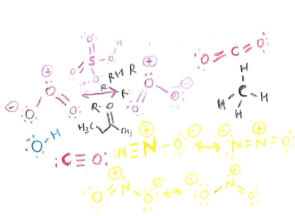
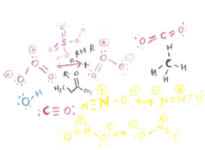

Fundamentals of Air Pollution (Beta Version)
Welcome! This site is built for anyone who wishes to learn about some basics and fundamentals of air pollution. This goal of this site is to educate most people, (this includes people who know nothing about air pollution or college chemistry --- to people who know advanced math like multivariable calculus). It would be good beforehand to have your algebra skills honed (high school algebra - at least 1 to 2 years - should be a prerequisite for this website that covers exponentials/logarithms/Euler's number). This website is divided into four main sections: prerequisites, chemistry, stability/transport and climate, each focusing on a topic in further detail with one exception: climate will be continually be worked on and will be more like "blog posts" instead. This is mainly because people's understanding of climate has become so controversial (and the poor climatologists, they are being racked on!). This site is in beta, which means it is still not perfect, but most of the material should be there.
 

It was difficult setting up the site as this is geared toward a general audience. Again - at the very least, one should know how to do some basic math, like the algebra (which many people hate of course) they teach you in school, but of course, there are other things one should know such as unit conversions, dimensional anaylsis, chemical reactions, etc. which are somewhat covered on this site if you don't know them. You can go online (or read a book, which is sometimes better) to look up dimensional anaylsis tutorials, unit conversion tutorials, and how to read chemical reactions. Books are usually the best source, but material online should contain the basic amount of information you need to know. It's probably not fun, it's not very exciting, and you probably would much rather be doing something else - but certain mathematical skills should be essential when learning about subjects regarding pollution.
I go into more rigorous detail on certain topics in the "Advanced" section up above, this is if you want to see long derivations of something or do some crazy math and stuff. I doubt many people will go to this section, but believe me, there are "those" kind of people who want to go here. It is better to stray away from this area if you do not want to bore yourself with long mathematical derivations and a bunch of equations regarding the first law of thermodynamics.
Finally, read through the prerequisites pages first!
Throughout these pages, you will see some terrible (but fun!) artwork. All I can say is, I tried to draw.
Note: For best results, PLEASE make sure your browser is up to date! Thank you!